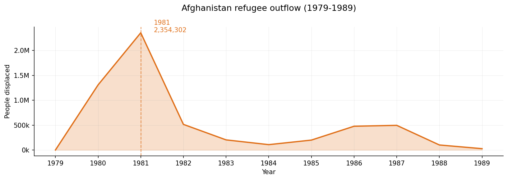

Displacements around the globe from 1962-2025
Introduction
The United Nations Refugee Agency (UNHCR) is the largest global organization providing assistance and protection to forcibly displaced and stateless people. It was founded in 1951 in the aftermath of the second World War, and was originally only intended to provide temporary assistance to European refugees. However, over the years, the UNHCR's mandate has expanded to include people of all nationalities and in all regions of the world. Today, the UNHCR provides assistance to millions of refugees, asylum seekers, internally displaced people, and stateless individuals around the world.
The UNHCR also publishes data about forcibly displaced people each year. We are going to dive into one of their datasets: the UNHCR Forced Displacement Flow Dataset, which tracks international displacements around the world, from 1962 to 2025. First, we'll analyze the data to identify the biggest refugee crises in the 64 years we have data for, and then we'll dive into three crises from different decades to see whether there might be differences between being a refugee in the 1980s versus 2022.
First, an overview of what the data is, and what it isn't: each entry is a 'flow', with an origin country, a destination country, and a number of people.
Pros
- Covers a long time period (1962-2025)
- Covers 216 countries
- Reliable source (UNHCR)
Limitations
- Only tracks international flows
- Flows are aggregated year-by-year
- Many refugees have unknown origin
- Some displaced people are undocumented
The dataset tracks three kinds of people: refugees, asylum claimants, and people in refugee-like situations. Notably, it does not track internally displaced people — according to the UNHCR 2024 Global Trends Report, they accounted for 73.5 million out of 123.2 million forcibly displaced people worldwide, approximately 60%.
Scroll down to dive in ↓
A global look
A global view, 1962-2025
Animated map of displacement flows each year. Country color reflects total outgoing flows; arrows show the 100 largest flows per year. Use the timeline at the bottom to scrub through years.
The number of displaced people has been rising steadily, and they come from increasingly diverse backgrounds: Afghanistan, Syria, Sudan, Ukraine, Venezuela, Myanmar… Rather than picking crises we already recognize, we'll let the data tell us when and where they happened.
The ten largest episodes
Top 10 displacement episodes ranked by total people displaced. An episode is a continuous period with outgoing flow above that country's median, and at least 10,000 people per year.
All ten happened after 1977. The largest is the Syrian Civil War — over 9 million displaced between 2011 and 2025.
Afghanistan appears twice — the Soviet–Afghan war (1979–1989) and the US-led invasion (2001–2021). Next, three case studies from different decades and regions.
Case studies
AFGHANISTAN
The Soviet-Afghan war took place in Afghanistan from Decemper 1979 to February 1989. Though the conflict officially ends in 1989, the instability persisted long afterward and continued after the U.S. invasion in 2001. These decades of sustained instability produced one of the world's largest and most prolonged refugee crises.
source: UNHCR - https://www.unhcr.org/where-we-work/countries/afghanistan
Our data shows particular a high peak of displacements from 1980 to 1983. This leads us to believe the flow of
forced displaced people is highter at the beginning of a crisis. let's go ahead and plot that to see what it looks like.
Note on Afghanistan: the intensity and length of thos conflict makes Afghanistan somewhat of an outlier
in this analysis.
"In fact, Afghanistan has experienced one of the world's largest refugee crises for more than two decades. Between the Soviet invasion of Afghanistan in 1979 and the present day, one in four Afghans has been a refugee. At the peak of the crisis in the late 1980s, there were more than six million Afghan refugees. " source: The Forced Migration Review - https://www.fmreview.org/ruiz/
The soviets started their occupation (between 1980 - 1985) with a "scorched earth campaign", which aimed to cut any support the mujahideen (religious Afghan freedom fighters) might have in the region. This implied the destruction of crops, irrigation systems, and villages and affected local population terribly. By the end of 1981, the widespread destruction of civilian infrastructure further intensified displacement and cross-border asylum movements.
Source: article written by History professor Edward B. Westermann — journals.lib.unb.ca
"Soviet attempts to intimidate the civil population involved a joint air-land effort. The intensive bombardment of villages [...] served as the prelude for the entry of mechanized and armored forces into the area. These forces then proceeded to conduct a 'scorched earth' campaign by destroying the local dwellings, food supplies, crops in the field, irrigation systems, livestock and wells. One Swedish official, after visiting several villages destroyed by the Soviets noted, 'Russian soldiers shot at anything alive in six villages — people, hens, donkeys — and then they plundered what remained of value.' These Soviet operations aimed at driving the villagers out of these areas in an effort to create a cordon sanitaire in which the insurgents would find no support."
Where do people go?
We immediately notice Iran in dark red taking in a whopping 1.4 million people in 1981, followed closely by Pakistan with close to a million refugees. Those are two adjacent countries.
| asylumname | 1980 | 1981 | 1982 | 1983 |
|---|---|---|---|---|
| pakistan | 1.0M | 947k | 502k | 0 |
| iran | 270k | 1.4M | 0 | 200k |
| germany | 5k | 4k | 2k | 687 |
| turkiye | 5k | 0 | 4k | 0 |
| india | 0 | 3k | 2k | 3k |
| syria | 0 | 0 | 3k | 0 |
| saudi arabia | 0 | 0 | 2k | 0 |
| united arab emirates | 2k | 0 | 0 | 0 |
But what about the other adjacent countries north of Afghanistan: Turkmenistan, Uzbekistan, and Tajikistan? Why are they marked in grey? Did they not take in any refugees? …Not quite. A Folium map usually uses current country borders, because it relies on modern basemap tiles or modern GeoJSON/shapefiles. Back in 1980, the three aforementioned countries were still part of the USSR bloc and therefore were considered part of the direct attacking force, explaining why no Afghan would seek refuge up north.
Iran from 1.4M in 1981 to 0 in 1982? Why do some countries take in massive numbers one year and then 0 the following year? Policy changes? Did the borders suddenly close? Two things:
- Status name: Upon closer inspection, it would rather seem that this is more a question of "status" than an actual halt in displacement flows. Though the borders were indeed open during this period, displaced people were not labeled as "refugees" and could therefore be unregistered in our UNHCR dataset. So our data may show 0 while in reality hundreds were still physically crossing into Iran.
- UNHCR reconstruction of numbers retrospectively: It may have been hard to keep track of the exact flux taking place each year of the conflict, and it could be that some records were incomplete, estimated retrospectively, or merged into a single year. This is something that can occur with older displacement data.
"Until 1992, the Iranian government allowed many Afghans to register as 'involuntary migrants' (mohajerin), gain automatic residency in Iran, and enjoy benefits such as basic healthcare and work permits. Iranian officials effectively treated these registered Afghans as refugees, though that designation was not officially used by the Iranian government."
Source: Human Rights Watch — hrw.org/reports/iran1113_ForUpload_0.pdf
As seen in our preliminary study, we have few data points around this decade. This backs up the above-mentioned point.
How far do people go?
Let's have a closer look at the average distance traveled by refugees to flee this conflict.
Afghanistan outflow of refugees between 1979 and 1989.
Bubble chart showing the relationship between distance traveled and number of refugees. Each bubble represents a flow of refugees from Afghanistan to a specific destination country in a specific year.
Case study:Rwanda
Over roughly 100 days in 1994, members of the Tutsi ethnic group — along with moderate Hutu and Twa — were systematically killed by Hutu militias; over a million people died.
Displacement follows the same pattern: neighbors first. The Democratic Republic of Congo, Tanzania and Burundi appear dark red, with up to 1.3 million moving to DRC in 1994.
Distant destinations — Angola, Canada, much of Europe — received fewer than 1,000 each.
Case study:Ukraine
Flows from Ukraine since Russia's 2022 full-scale invasion. The conflict is ongoing.
The pattern shifts. Neighbors still dominate, but the spread across Europe is much wider and warmer than in the previous two cases.
Ukrainians were granted access and protection on a scale neither Afghans nor Rwandans received. Why? Geography, politics, and policy all matter.


So where do people go?
Proximity is the dominant factor. Immediate neighbors light up red on every map — they receive the bulk of displacements in the first years of a crisis.
Europe is a recurring secondary attractor, sometimes halfway across the planet (as with Rwanda). Germany received almost 5,500 asylum seekers from Afghanistan in 1980. But access is uneven: stricter rules, longer journeys, and political framing all shape who actually reaches Europe.
Political openness matters
Ukrainians had far more options to flee to than Rwandans or Afghans, and were welcomed more broadly. The same data pattern (neighbors first, Europe second) hides very different reception policies underneath.
Further research
We focused on refugees and asylum seekers, and whether their destination patterns evolve over time. To go further, one could look at:
Does the economic situation of the destination country play a role (GDP)? Do language, culture, and religion shape destinations? Does the openness of the destination's politics determine who gets in?